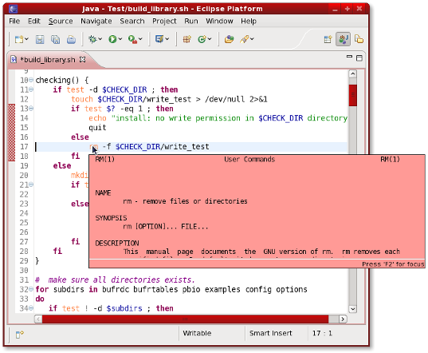

| Shell Script Editor User Guide | ||
|---|---|---|
|
|
||
| Getting Started | ||
ShellEd is a superb shell script editor for Eclipse. The great benefits of this plug-in are the integration of man page information for content assist/hover help and the ability to run your project's shell scripts without having to leave Eclipse to start up a terminal.

It also comes with all the features you'd expect from a full-featured Eclipse code editor such as syntax highlighting, code-folding and outline view.
|
|
||
| Getting Started |